6. 页面级需求说明
6.1 概览
页面目标
展示课程资产健康度与待办：总量、发布率、待审评论，并提供快捷审核入口。
页面布局
面包屑「课程 > 概览」→ KPI 网格 → 状态/类型分布条 → 发布率仪表 → 最近更新课程表 → 待审核评论表。
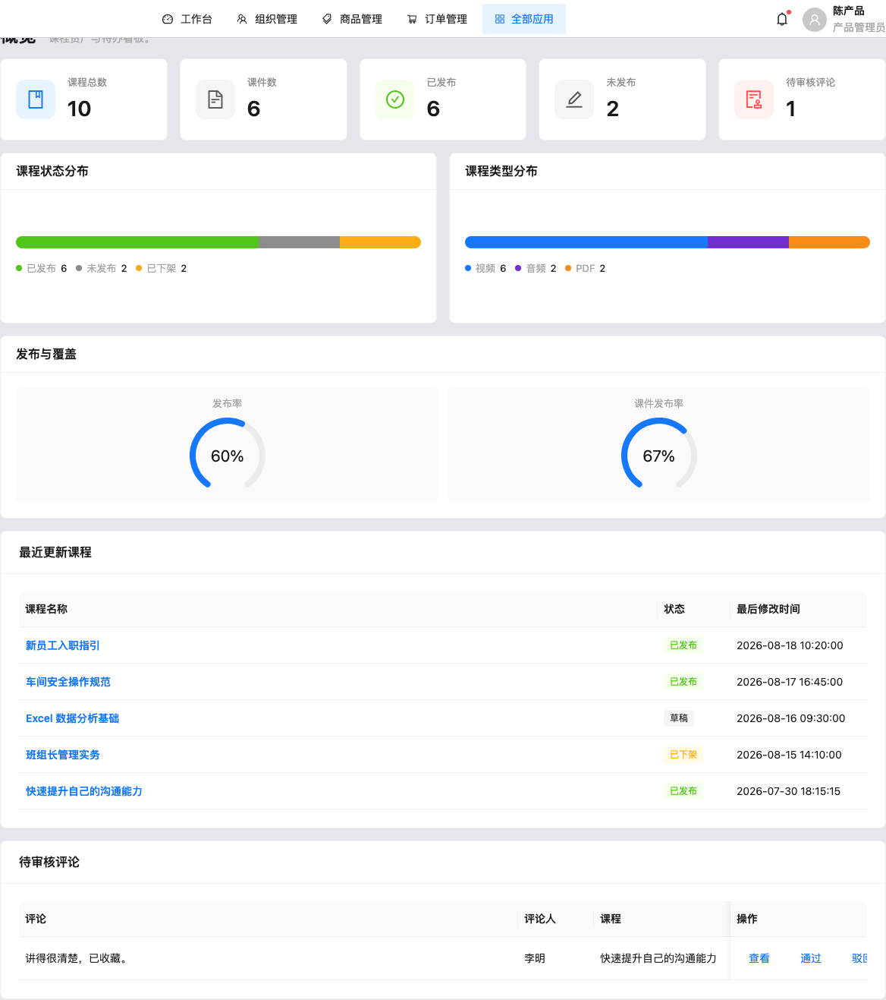
概览-页面布局-页面整体：概览完整布局。
概览-指标看板-KPI指标卡：课程总数、课件数、已发布、未发布、待审核评论。
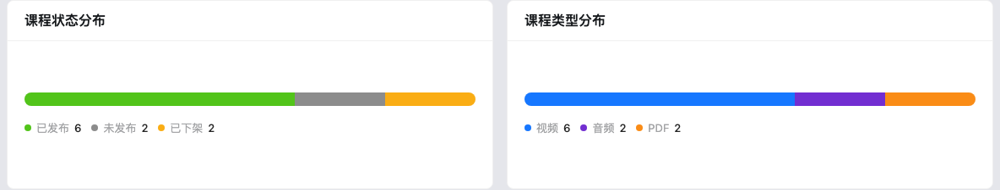
概览-图表区-状态与类型分布：课程状态分布与类型分布分段条。
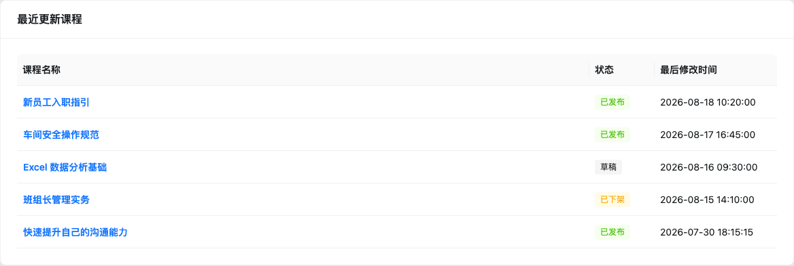
概览-最近更新-最近更新课程表：课程名称可点击跳转详情；列含状态、最后修改时间。
概览-待审评论-待审核评论表：评论/评论人/课程；操作：查看、通过、驳回。
组件显示逻辑
| 组件路径 | 组件类型 | 默认状态 | 显示/隐藏逻辑 | 启用/禁用逻辑 | 数据来源 | 状态变化 | 空/错/加载状态 | 权限/条件控制 |
|---|
| 概览-指标看板-KPI指标卡 | 卡片组 | 展示 | 始终显示 | 无 | computeCourseOverviewStats（courses/courseware/records/comments） | 数据变更重算 | 数值可为 0 | 无权限控制（待确认） |
| 概览-待审评论-待审核评论表 | 表格 | 展示 | 始终显示 | 行操作始终可点 | pendingCourseComments | 通过/驳回后行消失 | emptyText「暂无待审核评论」 | 待确认 |
操作说明
| 操作名称 | 组件路径 | 触发元素 | 前置条件 | 启用/禁用逻辑 | 用户动作 | 系统响应 | 状态变化 | 成功反馈 | 失败反馈 | 跳转/接口 |
|---|
| 查看评论所属课程 | 概览-待审评论-查看按钮 | 链接按钮「查看」 | 有评论记录 | 始终启用 | 点击 | 导航到课程详情 comments Tab | 路由变化 | 无 toast | 无 | onNavigate('course-detail', id, 'comments') |
| 通过评论 | 概览-待审评论-通过按钮 | 「通过」 | 待审核 | 始终启用 | 点击→确认 | approveCourseComment | status→已通过 | message.success | 待确认 | localStorage 持久化 |
| 驳回评论 | 概览-待审评论-驳回按钮 | 「驳回」 | 待审核 | 始终启用 | 点击→确认 | rejectCourseComment | status→已驳回 | message.success | 待确认 | localStorage |
验收标准
Given 存在待审核评论，When 管理员点击通过并确认，Then 评论状态变为已通过且概览待审数减 1。
6.2 课程管理
页面目标
按分类与类型维护课程列表，支持查询、批量发布/撤销、分类树管理。
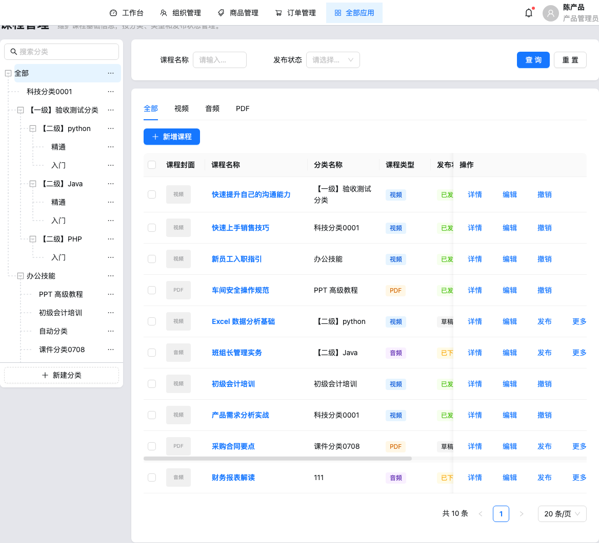
课程管理-页面布局-页面整体：左侧分类树 + 右侧查询与表格。
 课程管理-分类树-分类树面板：支持搜索、新建分类、节点更多操作（新建子分类/编辑/上移/下移/删除）。
课程管理-查询筛选-搜索面板：课程名称 Input、发布状态 Select；查询/重置。
课程管理-分类树-分类树面板：支持搜索、新建分类、节点更多操作（新建子分类/编辑/上移/下移/删除）。
课程管理-查询筛选-搜索面板：课程名称 Input、发布状态 Select；查询/重置。
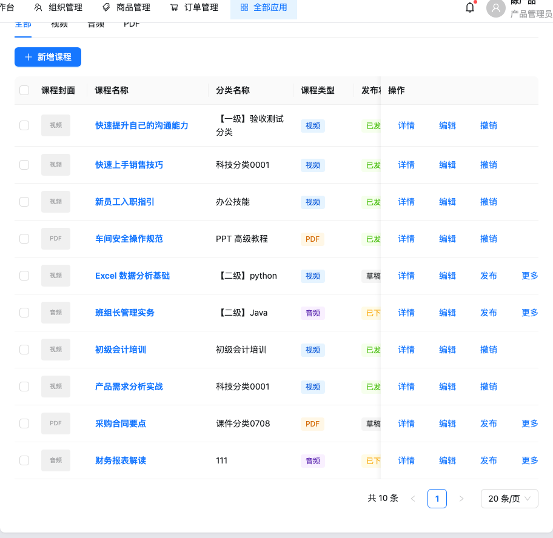
课程管理-列表表格-课程表格：封面、名称、分类、类型、发布状态、创建人、时间与行操作。
字段说明（查询）
| 字段名称 | 组件路径 | 控件类型 | 是否必填 | 默认值 | 校验规则 | 选项值 | 业务含义 |
|---|
| 课程名称 | 课程管理-查询筛选-课程名称 | Input | 否 | 空 | 包含匹配 | — | 按名称模糊筛选 |
| 发布状态 | 课程管理-查询筛选-发布状态 | Select | 否 | 全部 | 无 | 草稿 / 已发布 / 已下架 | 精确匹配状态 |
列表列
| 列名 | 组件路径 | 数据含义 | 格式 | 是否可排序 | 是否可筛选 | 行操作 |
|---|
| 课程封面 | 课程管理-列表表格-封面列 | 类型占位缩略 | 类型文字 | 否 | 否 | — |
| 课程名称 | 课程管理-列表表格-名称列 | 课程名 | 链接按钮 | 否 | Tab/查询 | 点击进详情 |
| 分类名称 | 课程管理-列表表格-分类列 | categoryId→名称 | 文本 | 否 | 左侧树 | — |
| 课程类型 | 课程管理-列表表格-类型列 | 视频/音频/PDF | Tag | 否 | 顶部 Tab | — |
| 发布状态 | 课程管理-列表表格-状态列 | 草稿/已发布/已下架 | Tag | 否 | 查询 | — |
| 操作 | 课程管理-列表表格-操作列 | — | 链接组 | — | — | 详情/编辑/发布|撤销/更多删除 |
操作说明
| 操作名称 | 组件路径 | 触发元素 | 前置条件 | 启用/禁用逻辑 | 用户动作 | 系统响应 | 状态变化 | 成功反馈 | 失败反馈 | 跳转/接口 |
|---|
| 新增课程 | 课程管理-工具栏-新增课程 | 主按钮 | 无 | 始终 | 点击 | 跳转 course-create | 路由 | 无 | 无 | hash 路由 |
| 发布 | 课程管理-列表表格-发布按钮 | 「发布」 | 非已发布 | 已发布时显示「撤销」 | 点击 | setCourseStatus([id],'已发布') | status→已发布 | success toast | 已发布时 info | 内存 store |
| 撤销 | 课程管理-列表表格-撤销按钮 | 「撤销」 | 已发布 | 仅已发布显示 | 确认弹窗 | 状态改为已下架 | 已下架 | success | 待确认 | 内存 store |
| 删除 | 课程管理-列表表格-更多-删除 | 更多菜单 | canDeleteCourse：非已发布 | 已发布不展示删除 | 危险确认 | removeCourse | 记录移除 | success | error「请确认课程未发布」 | 内存 store |
| 批量发布/撤销 | 课程管理-工具栏-批量操作 | Dropdown | 已勾选行 | 无勾选时待确认禁用 | 确认 | 过滤可操作行后批量改状态 | 多行变化 | success 计数 | info 无可操作 | 内存 store |
| 新建分类 | 课程管理-分类树-新建分类 | 虚线按钮 | 层级<3 | 第 3 级不可再加子级 | 弹窗填名称 | addCourseCategoryNode | 树新增节点 | success | warning「分类最多支持 3 级」；重名校验 | 内存 store |
交互规则
- 顶部 Tab：全部 / 视频 / 音频 / PDF，与查询条件叠加过滤。
- 选中分类：按子树 ID 过滤
categoryId。
- 删除分类：若子树内有课程占用，warning 并阻止；否则确认后级联删除子分类。
验收标准
Given 课程为草稿，When 点击发布，Then 状态变为已发布且删除入口消失。Given 已发布，When 尝试删除，Then 不展示删除或提示先下架。
6.3 新增 / 编辑课程
页面目标
采集课程完整配置并保存；编辑态可跳转详情；脏数据离开需确认。
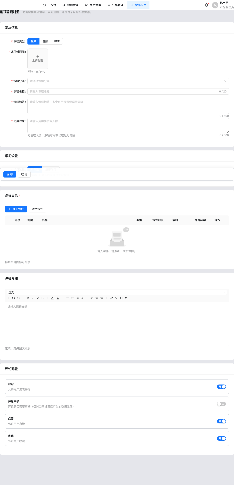
新增课程-表单页-页面整体：分卡片表单 + 底部粘性保存/取消。
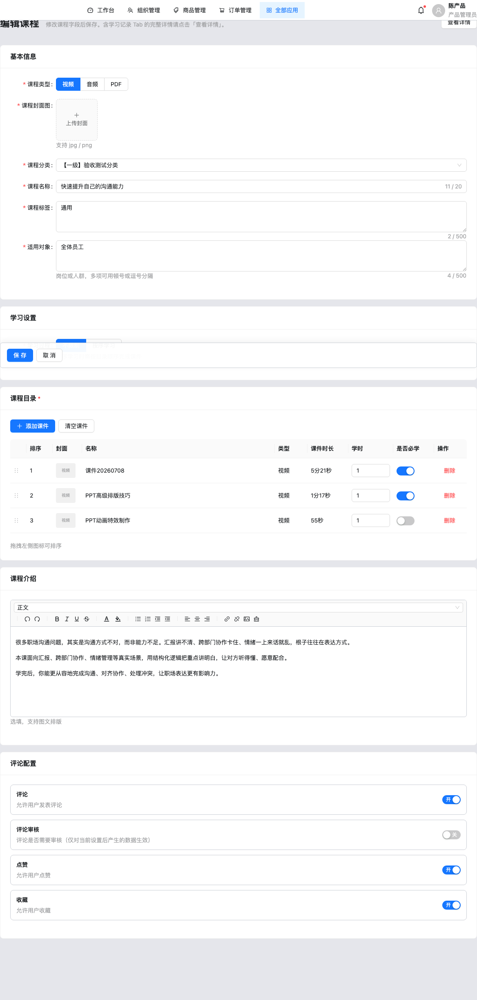
编辑课程-表单页-页面整体：编辑态带「查看详情」；预填已有课程数据。
字段说明
| 字段名称 | 组件路径 | 控件类型 | 是否必填 | 默认值 | 校验规则 | 选项值 | 业务含义 |
|---|
| 课程类型 | 新增课程-基本信息-课程类型 | Radio.Button | 是 | 视频 | 必选 | 视频/音频/PDF | 课程媒体类型 |
| 课程封面图 | 新增课程-基本信息-课程封面图 | Upload picture-card | 是 | 空 | 必传；accept image/*；本地 FileReader→DataURL | — | 封面展示 |
| 课程分类 | 新增课程-基本信息-课程分类 | TreeSelect | 是 | 无 | 必选；可搜索 | 分类树 | 归属分类 |
| 课程名称 | 新增课程-基本信息-课程名称 | Input | 是 | 空 | 必填去空格；max 20；showCount | — | 显示名 |
| 课程标签 | 新增课程-基本信息-课程标签 | TextArea | 是 | 空 | 必填；max 500 | — | 标签文案 |
| 适用对象 | 新增课程-基本信息-适用对象 | TextArea | 是 | 空 | 必填；max 500 | — | 岗位/人群 |
| 学习过程 | 新增课程-学习设置-学习过程 | Radio.Button | 是 | 不限制 | 必选 | 不限制 / 按序学习 | 按序需按目录完成 |
| 课程目录 | 新增课程-课程目录-目录表 | 可编辑 Table | 是（≥1） | [] | 至少 1 个课件 | 来自课件库 | 学时/必学/排序 |
| 课程介绍 | 新增课程-课程介绍-富文本 | RichTextField | 否 | 空 | 无 | — | 图文介绍 |
| 评论/审核/点赞/收藏 | 新增课程-互动设置-开关组 | Switch×4 | 否 | 评论开、审核关、点赞开、收藏开 | 无 | 开/关 | 员工端互动能力 |
操作说明
| 操作名称 | 组件路径 | 触发元素 | 前置条件 | 启用/禁用逻辑 | 用户动作 | 系统响应 | 状态变化 | 成功反馈 | 失败反馈 | 跳转/接口 |
|---|
| 添加课件 | 新增课程-课程目录-添加课件 | 主按钮 | 无 | 始终 | 打开选择弹窗 | 多选课件追加到目录，默认学时 1、必学开 | catalog 增长 | success 数量 | info「所选课件已在目录中」 | 弹窗确认 |
| 清空课件 | 新增课程-课程目录-清空课件 | 按钮 | 目录非空 | 空目录可点但无效果 | 确认 | catalog=[] | 清空 | 无额外 toast | — | 确认弹窗 |
| 保存 | 新增课程-底部操作-保存 | 主按钮 | 校验通过且目录非空 | 始终可点 | 点击 | upsertCourse；新建默认草稿 | 写入 store | success → 返回列表 | 表单校验 / error「请至少添加一个课件」 | onBack |
| 取消/离开 | 新增课程-底部操作-取消 | 按钮/面包屑 | 若 dirty | — | 点击 | 确认离开 | 丢弃修改 | — | — | onBack |
验收标准
Given 未添加课件，When 保存，Then 提示至少添加一个课件且不落库。Given 表单已改，When 点取消，Then 出现离开确认。
6.4 课程详情
页面目标
只读查看课程配置与运营数据，管理评论与答题设置。
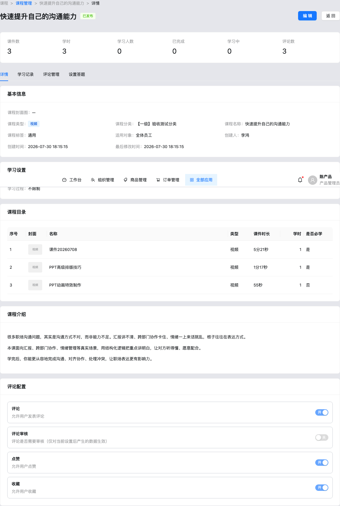
课程详情-页面布局-页面整体：标题+状态 Tag、编辑/返回、统计条、四 Tab。
课程详情-标题区-标题与操作：主按钮编辑、次按钮返回。
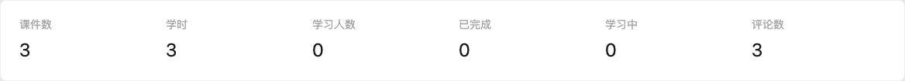
课程详情-统计条-指标卡：课程维度统计（学习/互动等，见 CourseStatsRow）。
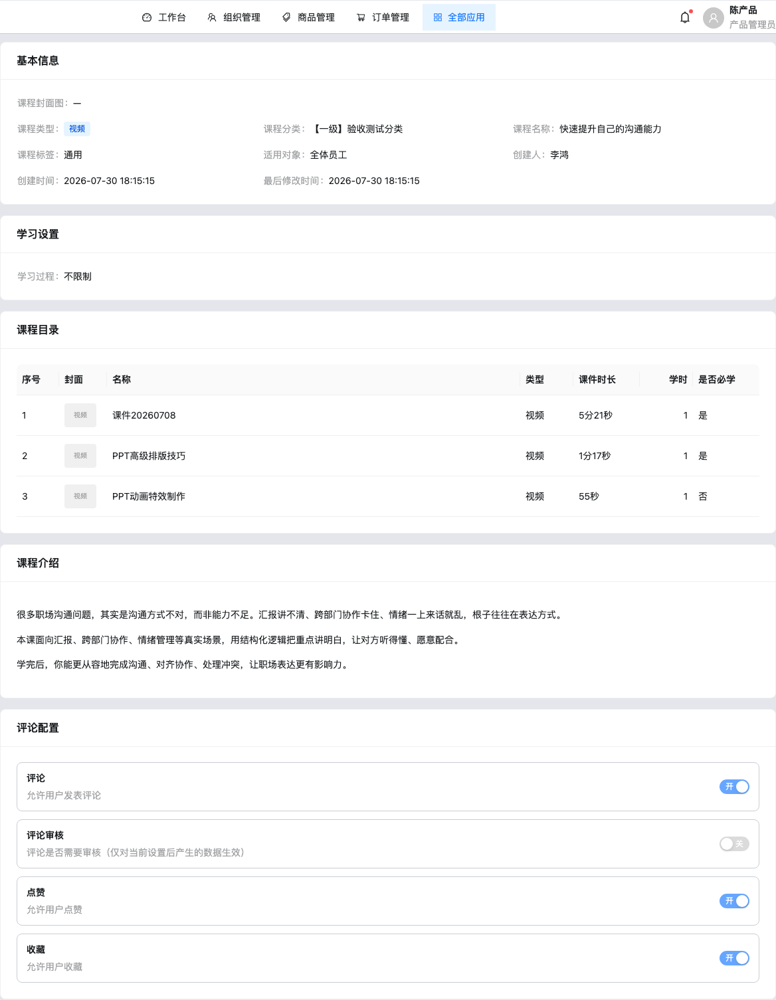
课程详情-详情Tab-内容区：Descriptions + 目录表 + 只读评论配置 + 介绍 HTML。
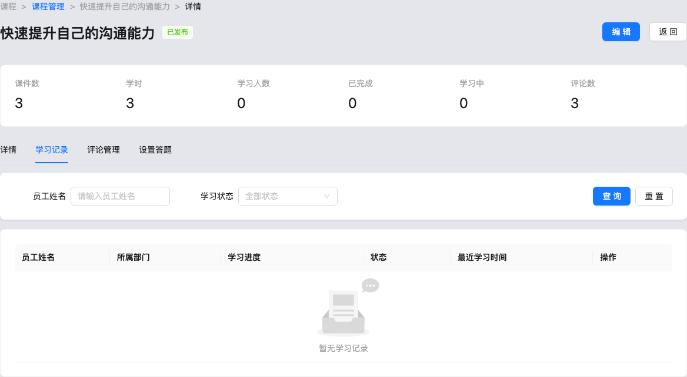
课程详情-学习记录Tab-面板：按员工姓名/状态筛选；进度条；详情按钮目前 message.info 占位。
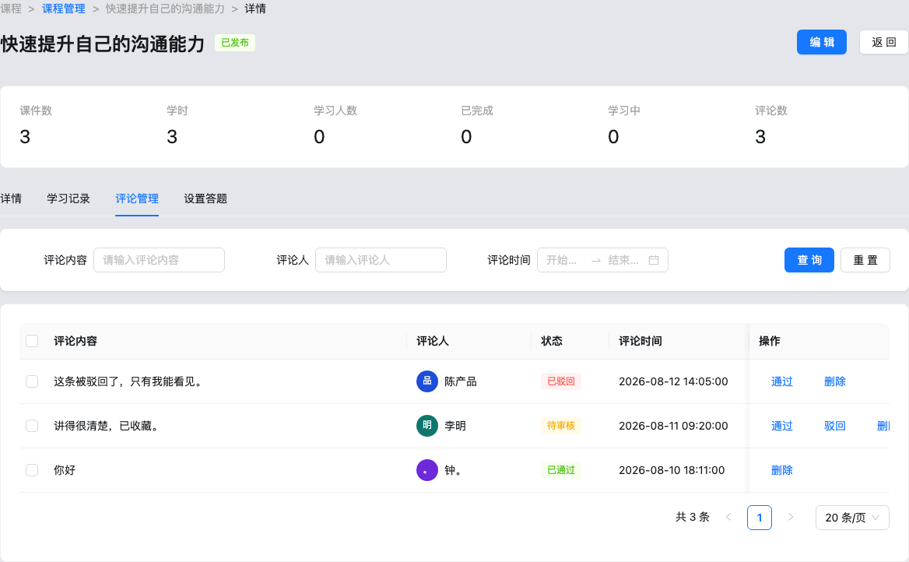
课程详情-评论管理Tab-面板：内容/作者/时间筛选；批量通过驳回删除；行级审核。
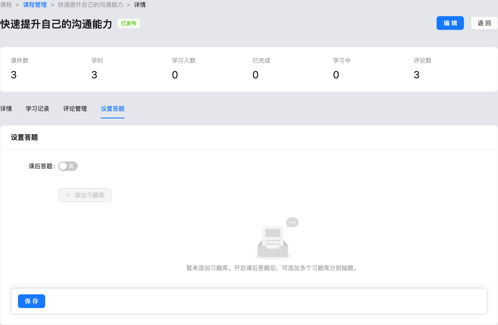
课程详情-设置答题Tab-面板：是否开启答题；题库规则（分类/题型/难度/抽题数）；库存校验来自练习题库 store。
组件显示逻辑
| 组件路径 | 组件类型 | 默认状态 | 显示/隐藏逻辑 | 启用/禁用逻辑 | 数据来源 | 状态变化 | 空/错/加载状态 | 权限/条件控制 |
|---|
| 课程详情-页面布局-空状态 | Empty | 隐藏 | recordId 无效或课程不存在时显示 | — | courses.find | — | 「课程不存在或已删除」 | — |
| 课程详情-Tab容器-Tabs | Tabs | detail | 始终 | — | URL tab | 切换写回 hash | destroyOnHidden | — |
| 课程详情-设置答题Tab-题库规则 | 动态表单 | 随 enabled | enabled=true 显示 banks | — | courseQuizStore + practice 题库 | 保存写 localStorage | 库存为 0 时提示风险（代码可见） | 待确认与考试权限关系 |
验收标准
Given 课程存在，When 打开 #/training/course-detail/1/comments，Then 默认选中评论管理 Tab。Given 无效 ID，When 进入详情，Then 显示空状态与返回按钮。
6.5 课件管理
页面目标
维护可被课程目录引用的课件资产（视频/音频/PDF）及其分类。
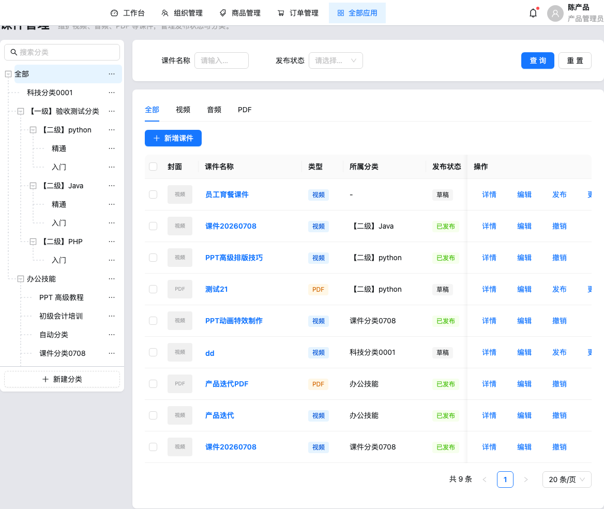
课件管理-页面布局-页面整体：布局同课程管理：左树右表。
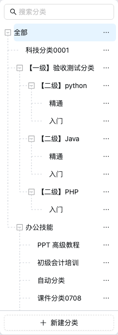
课件管理-分类树-分类树面板：独立课件分类树（与课程分类 store 分离）。
课件管理-查询筛选-搜索面板：名称 + 发布状态（草稿/已发布）。
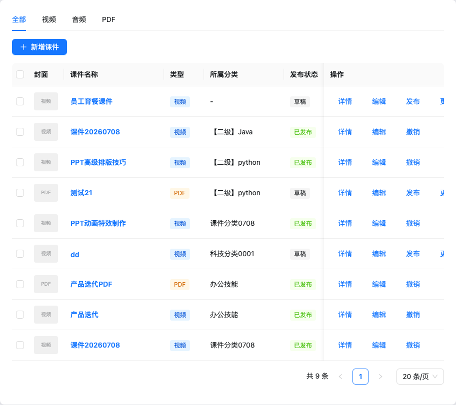
课件管理-列表表格-课件表格：课件列表与发布/编辑/删除等操作。
字段说明（抽屉表单，代码）
| 字段名称 | 组件路径 | 控件类型 | 是否必填 | 默认值 | 校验规则 | 选项值 | 业务含义 |
|---|
| 类型 | 课件管理-表单抽屉-类型 | Radio | 是 | 视频 | 必选；影响文件 accept | 视频/音频/PDF | 媒体类型 |
| 封面 | 课件管理-表单抽屉-封面 | Upload | 代码可见必填 | 空 | image/* | — | 列表封面 |
| 名称 | 课件管理-表单抽屉-名称 | Input | 是 | 空 | trim | — | 课件名 |
| 分类 | 课件管理-表单抽屉-分类 | TreeSelect | 是 | 当前选中分类 | 必选 | 课件分类树 | 归属 |
| 课件文件 | 课件管理-表单抽屉-文件 | Upload | 是 | 空 | 按类型 accept | — | fileName/fileUrl |
| 简介 | 课件管理-表单抽屉-简介 | TextArea | 否 | 空 | — | — | 说明 |
| 预估时长(秒) | 课件管理-表单抽屉-时长 | InputNumber | 否 | null | — | — | 展示用时长 |
操作说明
- 删除课件：仅草稿可删（
canDeleteCourseware）。
- 发布状态：草稿 ↔ 已发布（列表操作）。
- 分类占用校验：有课件时不可删分类（usage API）。
验收标准
Given 草稿课件，When 删除确认，Then 记录移除。Given 已发布课件，When 删除，Then 不可删。
6.6 规则设置
页面目标
配置学完/学时奖励的积分与学分发放规则。
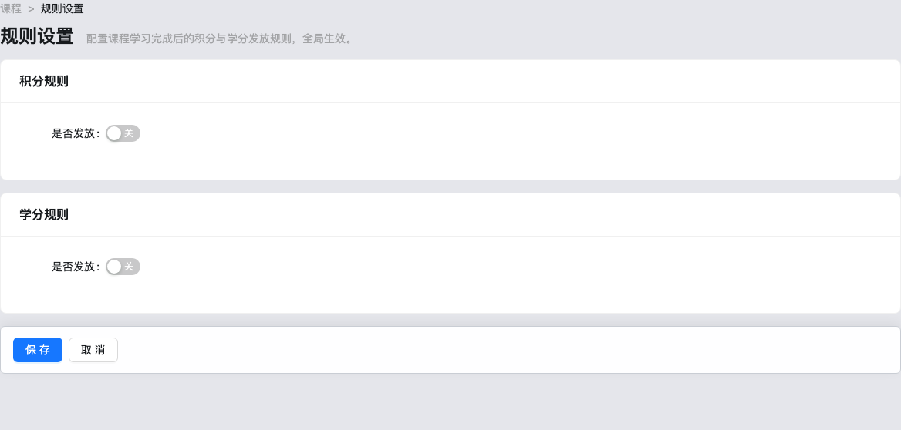
规则设置-页面布局-页面整体：积分规则卡 + 学分规则卡 + 保存。
字段说明
| 字段名称 | 组件路径 | 控件类型 | 是否必填 | 默认值 | 校验规则 | 选项值 | 业务含义 |
|---|
| 是否发放 | 规则设置-积分规则-是否发放 | Switch | 否 | 关 | 关时清空子字段 | 开/关 | 启用积分 |
| 发放方式 | 规则设置-积分规则-发放方式 | Radio | 启用时必填 | null | required | 每课程固定分 / 每 x 分钟 x 分 | 计算模式 |
| 固定分值 | 规则设置-积分规则-固定分值 | InputNumber | fixed 模式必填 | null | ≥1 整数 | — | 整课奖励 |
| 间隔分钟 / 区间分值 | 规则设置-积分规则-时长字段 | InputNumber | duration 必填 | null | ≥1 | — | 按时长发放 |
| 每节课上限 / 每日上限 | 规则设置-积分规则-上限 | InputNumber | 启用必填 | null | ≥1；日上限 ≥ 课上限 | — | 封顶 |
学分规则字段结构与积分相同（points / credits 两套 KindRule）。
验收标准
Given 开启积分且选固定分但未填分值，When 保存，Then 表单校验失败。Given 日上限小于课上限，When 保存，Then 校验失败。